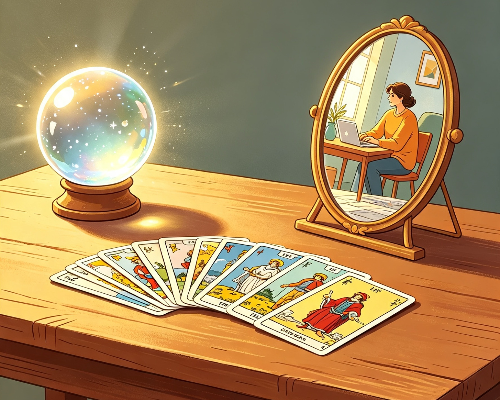

🤔 Tarot as a Tool for Self-Knowledge
One of the most common myths about Tarot is that it predicts a fixed, unchangeable future. But that is never what it was created to do. Tarot is not a crystal ball that writes your destiny — it is a mirror that reflects your present.

Every card shows you the energies, feelings, thoughts and possibilities that surround you right now. It reveals what you may be overlooking, what is guiding you, what needs attention and what paths are open ahead. If you follow one path, one result may come; if you make a different choice, the outcome shifts accordingly.
This is exactly why we designed MyTarot.Day the way we did: you shuffle the deck and choose your own four cards from the open fan — no birth date, no personal number, just your own hand guiding the draw. There are no generic phrases; the reading is built around the specific cards, positions and orientations you picked, speaking only to this moment.
Tarot empowers you, rather than deciding for you. It helps you see yourself more clearly, understand your own patterns, and make choices with greater awareness. It is a tool for reflection, a companion for difficult moments and a reminder that you are always the one who shapes your own journey.
Come back whenever you need clarity — every day brings a new perspective, and the cards are always here to help you know yourself better.